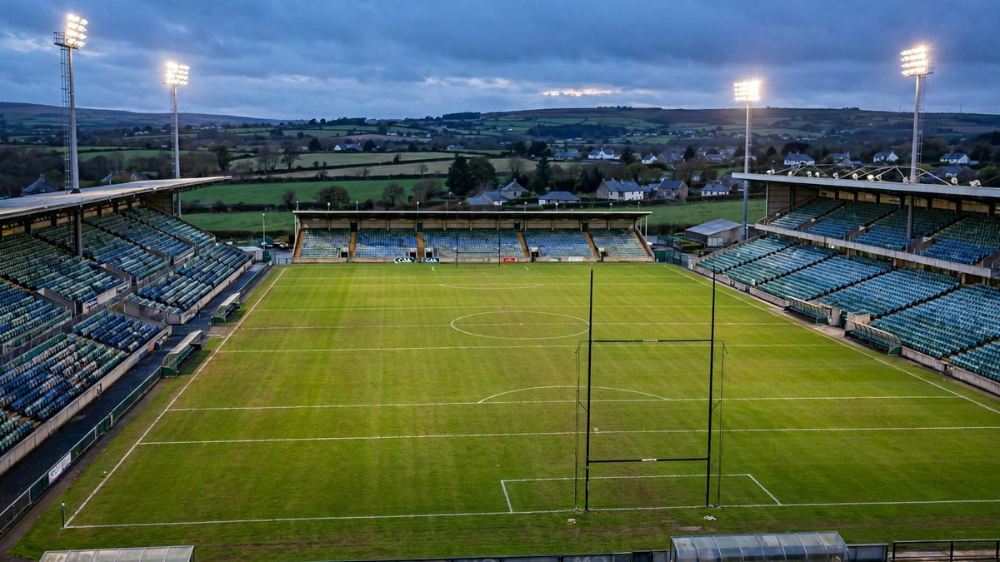

आयरलैंड ने कजाकिस्तान को 4-0 से हराया, विश्व कप प्लेऑफ में पोलैंड से सामना
कॉर्क में जेसी स्टेपलटन, केटी मैककेब, लूसी क्विन और डेनिस ओ'सुलिवन के गोलों से कुल 12-0 की जीत पूरी हुई। पेनल्टी पर बेल्जियम को हराने वाला पोलैंड आयरलैंड और ब्राजील 2027 के बीच खड़ा है।

मुख्य बिंदु
- आयरलैंड 4-0 कजाकिस्तान। मंगलवार रात कॉर्क की स्कोरलाइन ने वह काम पूरा किया जिस पर कभी संदेह नहीं था, और इसने कार्ला वार्ड की टीम को दिसंबर में पोलैंड के खिलाफ विश्व कप प्ले-ऑफ में भेज दिया।
- आयरलैंड ने शुक्रवार को अस्ताना में पहला चरण 8-0 से जीता था। पैर्क उई चाओम्ह में दूसरे चरण ने कुल स्कोर 12-0 कर दिया, दूसरी क्लीन शीट के साथ।
- कजाकिस्तान सपाट बैक फोर में गहराई में बैठा और पहले हाफ के अधिकांश समय तक रोके रखा। एबी लार्किन का शुरुआती प्रयास गोलकीपर एंजेलिना पोर्टनोवा के स्पर्श के बाद लाइन से हटाया गया, और लार्किन, डेनिस ओ…
आयरलैंड 4-0 कजाकिस्तान। मंगलवार रात कॉर्क की स्कोरलाइन ने वह काम पूरा किया जिस पर कभी संदेह नहीं था, और इसने कार्ला वार्ड की टीम को दिसंबर में पोलैंड के खिलाफ विश्व कप प्ले-ऑफ में भेज दिया।
आयरलैंड ने शुक्रवार को अस्ताना में पहला चरण 8-0 से जीता था। पैर्क उई चाओम्ह में दूसरे चरण ने कुल स्कोर 12-0 कर दिया, दूसरी क्लीन शीट के साथ।
गोल कैसे आए
कजाकिस्तान सपाट बैक फोर में गहराई में बैठा और पहले हाफ के अधिकांश समय तक रोके रखा। एबी लार्किन का शुरुआती प्रयास गोलकीपर एंजेलिना पोर्टनोवा के स्पर्श के बाद लाइन से हटाया गया, और लार्किन, डेनिस ओ सुलिवन और केटी मैककेब सभी करीब पहुंचीं, आयरलैंड वह गति खोज रहा था जो अस्ताना में इतनी आसानी से मिली थी। एमिली मर्फी ने अंदर काटकर पोर्टनोवा को शॉट धकेलने पर मजबूर किया। सफलता 40वें मिनट में आई, जब सेंटर बैक आना पैटेन ने पिछले पोस्ट पर क्रॉस किया और जेसी स्टेपलटन ने बाईं ओर से दौड़कर निचले कोने में हेड किया। यह स्टेपलटन का लगातार दो शुरुआतों में दूसरा गोल था, और द हाफवे लाइन की रेटिंग ने नोट किया कि उस रात उनकी हैट्रिक हो सकती थी।
हाफ टाइम के दो बदलावों के बाद दूसरा हाफ खुल गया। मारिसा शेवा और टायलर टोलैंड आईं और गति बढ़ाई, शेवा ने बॉक्स के किनारे से पोस्ट पर मारा। मर्फी के अंदर खेलने के बाद मैककेब ने फिर शुरुआत के तुरंत बाद दूर से शांति से निचले कोने में रखकर गोल किया। टोलैंड के बॉक्स में घुसकर तैयार करने के बाद लूसी क्विन ने अंदर काटकर तीसरा गोल जोड़ा। कॉर्क की ही डेनिस ओ सुलिवन ने चौथे गोल से रात समाप्त की, खुले गोल के सामने स्टेपलटन और एंबर बैरेट की चाल टूटने के बाद झपटकर। बैरेट के थ्रू बॉल ने स्टेपलटन को अंदर किया था, पोर्टनोवा ने बचाया, और ओ सुलिवन ने अपने घरेलू दर्शकों के सामने ढीली गेंद मारी। हेली नोलन ने अंत में दूर से पोर्टनोवा को परखा, लेकिन 4-0 ही अंतिम गिनती रही। पैर्क उई चाओम्ह में 10,334 दर्शकों ने देखा। दूसरी ओर गोलकीपर कोर्टनी ब्रोसनन को बहुत कम काम करना पड़ा।
वार्ड ने पहले चरण से चार बदलाव करके टीम घुमाई। उन्होंने मैककेब और ओ सुलिवन को वापस लाईं, कीरा कारुसा और कैटलिन हेज को आराम दिया, हेली नोलन को रक्षा में शुरुआत दी, पिछले नवंबर में हंगरी के बाद उनकी पहली शुरुआत, और शानाडे हॉपक्रॉफ्ट को मध्यक्षेत्र में आयरलैंड के लिए पहली शुरुआत दी, हॉपक्रॉफ्ट के अस्ताना में बेंच से आकर पहले स्पर्श पर गोल करने के बाद। पहले चरण की मैच की सर्वश्रेष्ठ खिलाड़ी क्लोई मुस्ताकी टीम से पूरी तरह बाहर रहीं।
पोलैंड ने कठिन रास्ते से जीता
दूसरा मुकाबला अंत तक गया। पोलैंड ने बेल्जियम से कुल 2-2 बराबरी की, अतिरिक्त समय में फिर बराबरी की और ग्दांस्क में पेनल्टी पर जीता। बार्सिलोना की स्ट्राइकर एवा पायोर उनके आक्रमण का नेतृत्व करती हैं। आयरलैंड ने अप्रैल में क्वालीफाइंग में पोलैंड को दो बार हराया था, बाहर 3-2 और घर पर 1-0, लेकिन विश्व कप स्थान दांव पर होने वाला प्ले-ऑफ अलग वजन का खेल है।
इसका अर्थ क्या है
आयरलैंड 2023 में ऑस्ट्रेलिया में पहले विश्व कप तक पहुंचा। अब एक दो चरणों का मुकाबला इस टीम और अगले ग्रीष्म ब्राजील में लगातार दूसरे फाइनल के बीच खड़ा है। एफएआई कैलेंडर प्ले-ऑफ को 1 दिसंबर और 5 दिसंबर के लिए रखता है, पहला चरण पोलैंड में और वापसी डबलिन के अवीवा स्टेडियम में अपेक्षित है। वार्ड उस घरेलू चरण के लिए अब तक की सबसे बड़ी भीड़ की मांग पहले ही कर चुकी हैं।
स्रोत
कॉर्क से आयरिश सन की मैच रिपोर्ट, द हाफवे लाइन की खिलाड़ी रेटिंग और स्पोर्टराडार का मैच रिकॉर्ड।
टाइमलाइन
- Oct 9, 2026आयरलैंड ने अस्ताना में पहला चरण 8-0 से जीता।
- Oct 13, 2026आयरलैंड ने कॉर्क में दूसरा चरण 4-0 से जीतकर कुल 12-0 की जीत हासिल की।
- Dec 1, 2026FAI कैलेंडर के अनुसार पोलैंड के खिलाफ प्लेऑफ का पहला चरण, पुष्टि बाकी है।